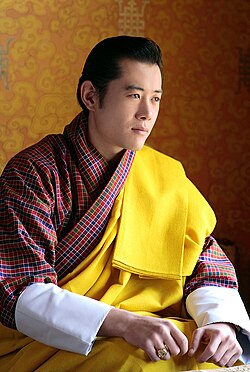
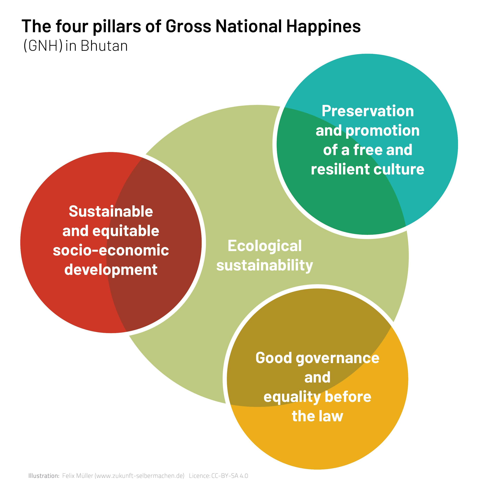

The Land of the Thunder Dragon
Bhutan is a peaceful country located in the Himalayas at Southeast Asia. Bhutan is known for its unique culture and tradition. The philosphy of GNHC is one of the unique thing in Bhutan.

Gross National Happiness
GNHC is a philosphy introduced by the Fourth Druk Gyalpo, Jigme Singye Wangchuck in the early 1970s. Our Druk Gyalpo emphasized that "Gross National Happiness is more important than Gross Domestic Product."GNHC is solely for the citizen's happiness and well-being.
The Four Pillars
- Good Government
- Sustainable Socio-Economic Development
- Cultural Preservation
- Environmental Conservation
